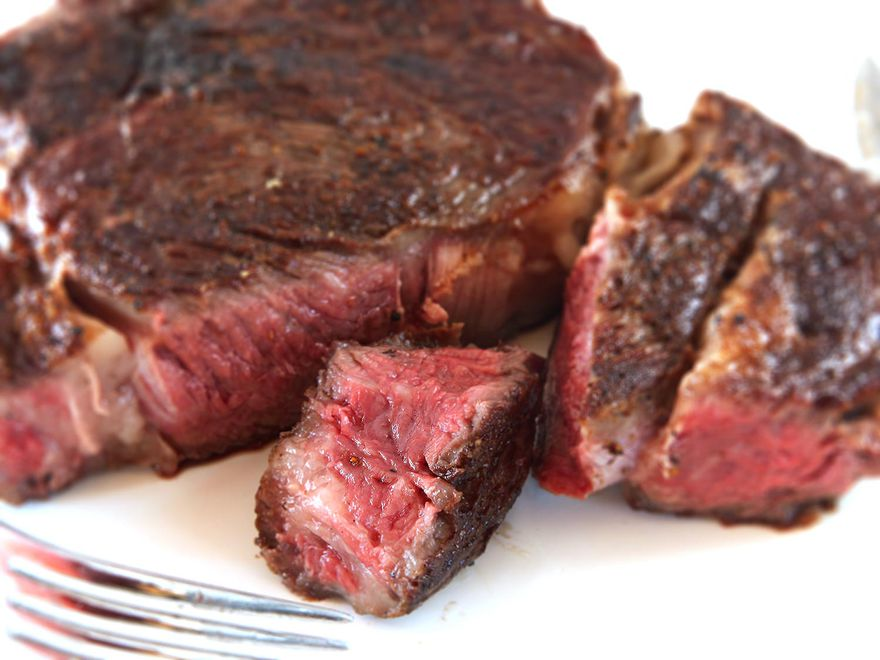

Reverse Seared Ribeye

Description
By slowly bringing the steak up to temperature in a low oven or on the cool side of a grill, then searing after, you get a perfectly cooked interior and a beautifully brown crust. If you're looking for a steak that's perfectly medium-rare from edge to edge, with a crisp crust, there's no better technique out there.
Furthermore, there's no need for a resting period before serving, thanks to the low-heat method used in the first stage of cooking.
Ingredients
- Thick-cut ribeye, at least 1 1/2 to 2 inches thick
- Kosher salt and freshly ground black pepper
- Vegetable oil
- 1 tablespoon of unsalted butter
Directions
- Generously season steak all over with salt and pepper.
- Set the steak on a wire rack in a rimmed baking sheet in an oven preheated to 225 degrees.
- Cook until an instant-read thermometer reads 115 degrees. This could take about 25-30 minutes, so be sure to check often.
- Just before the steak is due to be taken out of the oven, add 1 tablespoon of vegetetable oil to a cast-iron skillet over high heat until it starts smoking.
- Add the steak and butter to the skillet and cook until each side is browned ONLY for 45 seconds or so per side if the steak was taken out of the oven at the appropriate temperature. Use tongs to hold the steak sideways to brown the edges.
- TO SERVE: Plate the steak right away. There's not need for a resting period.